Capítulo 4 Estimación de densidades con Bayes
4.1 Introducción a la estimación Bayesiana
4.1.1 Preliminares
Recordemos que tenemos \(f(\theta)\) la previa, \(L(\theta)\) la verosimilitud de los datos y \(f(\theta|\text { data })\) la posterior ajustada a los datos.
\[\begin{equation*} f(\theta | \text { data }) \propto f(\theta) L(\theta) \end{equation*}\]
Además para el caso de la binomial tenemos que
\[\begin{equation*} f(y | \theta)=\theta^{\gamma}(1-\theta)^{(1-\gamma)} \end{equation*}\]
y la distribución beta se escribe de la forma
\[\begin{align*} f(\theta | a, b) & =\operatorname{beta}(\theta | a, b) \\ & =\theta^{(a-1)}(1-\theta)^{(b-1)} / B(a, b) \end{align*}\]
donde
\[\begin{equation*} B(a, b)=\int_{0}^{1} \theta^{(a-1)}(1-\theta)^{(b-1)}\mathrm{d} \theta. \end{equation*}\]
Los valores de \(a\) y \(b\) controlan la forma de esta distribución

Tomado de Kruschke (2014)
Una forma alternative es \(\mu=a /(a+b)\) es la media, \(\kappa=a+b\) es la concentración y \(\omega=(a-1) /(a+b-2)\) es la moda de la distribución Beta, entonces se cumple que
\[\begin{align*} & a=\mu \kappa \quad \text { y } \quad b=(1-\mu) \kappa \\ & a=\omega(\kappa-2)+1 \quad \text { y } \quad b=(1-\omega)(\kappa-2)+1 \text { para } \kappa>2 \end{align*}\]
Es decir, es posible estimar \(a\) y \(b\) de \(\kappa\), \(\mu\) y \(\omega\)
De acuerdo la combinación de estas dos distribuciones forma una familia conjugada de modo que
\[\begin{align*} f(\theta | z, N) & = f(z, N | \theta) f(\theta) / f(z, N) \quad \\ & = \theta^{z}(1-\theta)^{(N-z)} \frac{\theta^{(a-1)}(1-\theta)^{(b-1)}}{B(a, b)} / p(z, N) \\ & = \theta^{z}(1-\theta)^{(N-z)} \theta^{(a-1)}(1-\theta)^{(b-1)} /[B(a, b) p(z, N)] \\ & = \theta^{((z+a)-1)}(1-\theta)^{((N-z+b)-1)} /[B(a, b) p(z, N)] \\ & = \theta^{((z+a)-1)}(1-\theta)^{((N-z+b)-1)} / B(z+a, N-z+b) \end{align*}\]
4.1.2 Ejemplo sencillo
Suponga que se hace una encuesta a 27 estudiantes y se encuentra que 11 dicen que duermen más de 8 horas diarias y el resto no. Nuestro objetivo es encontrar inferencias sobre la proporción \(p\) de estudiantes que duermen al menos 8 horas diarias. El modelo más adecuado es
\[ f(x \vert p) \propto p^s (1-p)^f \]
donde \(s\) es la cantidad de estudiantes que duermen más de 8 horas y \(f\) los que duermen menos de 8 horas.
Una primera aproximación para la previa es usar una distribución discreta. En este caso, el investigador asigna una probabilidad a cierta cantidad de horas de sueño, según su experiencia. Así, por ejemplo:
## [1] 0.05 0.15 0.25 0.35 0.45 0.55 0.65 0.75 0.85 0.95## [1] 1.0 5.2 8.0 7.2 4.6 2.1 0.7 0.1 0.0 0.0## [1] 0.034602076 0.179930796 0.276816609 0.249134948 0.159169550 0.072664360
## [7] 0.024221453 0.003460208 0.000000000 0.000000000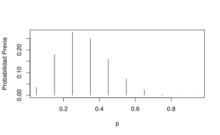
El paquete LearnBayes tiene la función pdisc que estima la
distribución posterior para una previa discreta binomial. Recuerde que
el valor 11 representa la cantidad de estudiantes con más de 8 horas
de sueño y 16 lo que no duermen esa cantidad.
## p prior post
## [1,] 0.05 0.03 0.00
## [2,] 0.15 0.18 0.00
## [3,] 0.25 0.28 0.13
## [4,] 0.35 0.25 0.48
## [5,] 0.45 0.16 0.33
## [6,] 0.55 0.07 0.06
## [7,] 0.65 0.02 0.00
## [8,] 0.75 0.00 0.00
## [9,] 0.85 0.00 0.00
## [10,] 0.95 0.00 0.00Y podemos ver la diferencia entre la previa (negro) y la posterior (roja),
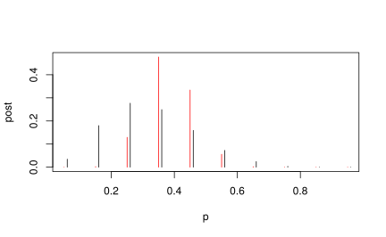
¿Qué se puede deducir de estos resultados?
4.1.3 Datos reales
Continuemos el ejercicio pero esta vez usando datos reales.
Carguemos los datos studdendata del paquete LearnBayes. Esta base
son preguntas que se le hicieron a un grupo de estudiantes de Bowling
Green State University. Para mayor información use ?studentdata.
Como solo se tiene la hora de dormir y la hora de despertarse, se debe tomar la diferencia.
horas_sueno <- studentdata$WakeUp - studentdata$ToSleep
horas_sueno <- na.omit(horas_sueno)
summary(horas_sueno)## Min. 1st Qu. Median Mean 3rd Qu. Max.
## 2.500 6.500 7.500 7.385 8.500 12.500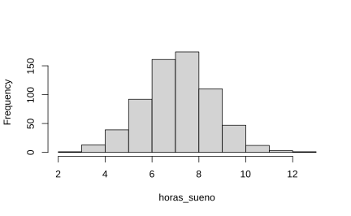
Ahora supongamos que se tiene quiere ajustar una previa continua a este modelo. Para esto usaremos una distribución Beta con parámetros \(a\) y \(b\), de la forma
\[ f(p\vert \alpha, \beta) \propto p^{1-a} (1-p)^{1-b}. \]
El ajuste de los parámetros de la Beta depende mucho de la información previa que se tenga del modelo. Una forma fácil de estimarlo es a través de cuantiles con los cuales se puede reescribir estos parámetros. En particular, suponga que se cree que el \(50\%\) de las observaciones la proporción será menor que 0.3 y el \(90\%\) será menor que 0.5.
Para esto ajustaremos los siguientes parámetros
quantile2 <- list(p = 0.9, x = 0.5)
quantile1 <- list(p = 0.5, x = 0.3)
ab <- beta.select(quantile1, quantile2)
a <- ab[1]
b <- ab[2]
s <- 11
f <- 16En este caso se obtendra la distribución posterior Beta con paramétros \(\alpha + s\) y \(\beta + f\),
curve(dbeta(x, a + s, b + f), from = 0, to = 1, xlab = "p",
ylab = "Densidad", lty = 1, lwd = 4)
curve(dbeta(x, s + 1, f + 1), add = TRUE, lty = 2,
lwd = 4)
curve(dbeta(x, a, b), add = TRUE, lty = 3, lwd = 4)
legend(0.7, 4, c("Previa", "Verosimilitud", "Posterior"),
lty = c(3, 2, 1), lwd = c(3, 3, 3))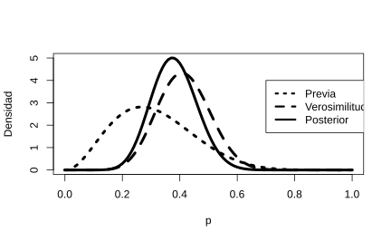
En particular, si estamos interesados en \(\mathbb{P}(p>=.5 | \text { data })\) se puede estimar con
## [1] 0.0690226y el intervalo de confianza correspondiente a esta distribución sería
## [1] 0.2555267 0.5133608Otra opción para estimar este intervalo es simular 1000 veces la distribución beta y observar su comportamiento en los cuantiles
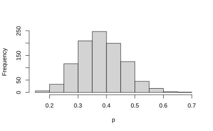
La probabilidad que este valor sea mayor que 0.5 es
## [1] 0.065## 5% 95%
## 0.2571102 0.51028564.2 Previa de histograma
El caso anterior funciona perfecto dada la combinación Binomial-Beta.
¿Qué pasaría si nuestra previa no está basada beta, sino que quisiéramos extraerla directamente de los datos?
El método que usaremos será el siguiente:
- Elija una cuadrícula de valores de \(p\) sobre un intervalo que cubra la densidad posterior.
- Calcule el producto de la probabilidad \(L (p)\) y el \(f (p)\) sobre esa grilla.
- Normalice dividiendo cada producto por la suma de los productos. En esto paso, estamos aproximando la densidad posterior por una probabilidad discreta Distribución en la grilla.
- Usando el comando
sampledeR, tome una muestra aleatoria con reemplazo de la distribución discreta.
El resultado nos debe arrojar una muestra de la distribución posterior sobre la grilla
Suponga nuevamente que tenemos las mismas previas dadas al inicio del capítulo
midpt <- seq(0.05, 0.95, by = 0.1)
prior <- c(1, 5.2, 8, 7.2, 4.6, 2.1, 0.7, 0.1, 0, 0)
prior <- prior/sum(prior)Con la función histprior construye los valores de \(p\) sobre una
grilla.
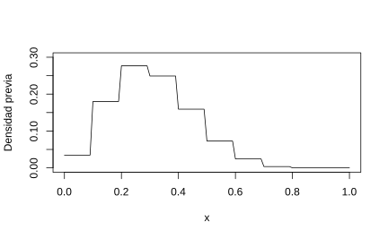
Luego recordando que nuestra posterior es \(beta(s+1,f+1)\) tenemos que
curve(histprior(x, midpt, prior) * dbeta(x, s + 1,
f + 1), from = 0, to = 1, ylab = "Densidad posterior")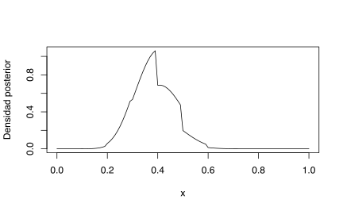
Para conseguir la distribución posterior, solo debemos de construirla para una secuencia ordenada de valores \(p\)
p = seq(0, 1, length = 1000)
post = histprior(p, midpt, prior) * dbeta(p, s + 1,
f + 1)
post = post/sum(post)Finalmente basta con tomar el muestreo de la posterior
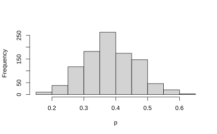
4.3 Métodos Monte Carlo
4.4 Una moneda
El tratamiento clásico de la estimación de parámetros bayesiana nos dice que si tenemos una densidad previa y la ``combinamos’’ con la verosimilitud de los datos, estos nos dará una densidad con más información. Se podría repetir el proceso varias veces para tratar de ajustar mejor la densidad posterior.
Sin embargo, se podría usar potencia de los métodos Monte Carlo para que esta búsqueda sea muy efectiva para encontrar los parámetros adecuados.
4.4.1 Ejemplo del viajero
Suponga que tenemos un viajero que quiere estar en 7 lugares distintos (suponga que están en línea recta) y la probabilidad de pasar a un lugar a otro se decide tirando una moneda no sesgada (50% a la derecha y 50% a la izquierda).
Este caso sería una simple caminata aleatoria sin ningún interés en particular.
Suponga además, que el viajero quiere estar más tiempo donde haya una mayor cantidad de personas \(P\) pero siguiendo ese patrón aleatorio. Entonces la forma de describir su decisión de moverse sería:
- Tira la moneda y decide si va a la izquierda o la derecha.
Si el lugar nuevo tiene personas que el actual salta a ese lugar.
Si el lugar nuevo tiene personas entonces el viajero tiene que decidir si se queda o se mueve. | calcula la probabilidad de moverse como \(p_{moverse} = P_{nuevo}/P_{actual}\).
Tira un número aleatorio entre 0 y 1 \(r\)
- Si \(p_{moverse}>r\) entonces se mueve.
- Sino, se queda donde está.
P <- 1:7
pos_actual <- sample(P, 1)
pos_nueva <- pos_actual
n_pasos <- 50000
trayectoria <- numeric(n_pasos)
trayectoria[1] <- pos_actual
for (k in 2:n_pasos) {
# Tira la moneda para decidir
moneda <- rbinom(1, 1, 0.5)
# moneda es 0 o 1
pos_nueva <- pos_actual
if (moneda == 1 & (pos_actual + 1) <= 7) {
pos_nueva = pos_actual + 1
} else if (moneda == 0 & (pos_actual - 1) >= 1) {
pos_nueva <- pos_actual - 1
}
p_moverse <- min(pos_nueva/pos_actual, 1)
hay_movimiento <- 1 - p_moverse <= runif(1)
if (hay_movimiento) {
pos_actual <- pos_nueva
}
trayectoria[k] <- pos_nueva
}df <- data.frame(x = 1:n_pasos, P = trayectoria)
ggplot(df[1:200, ]) + geom_line(aes(x, P)) + coord_flip() +
theme_minimal(base_size = 16)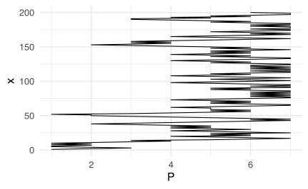
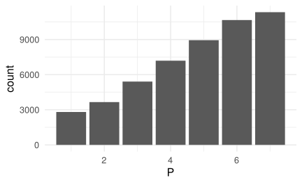
## [1] 4.86236## [1] 1.798514.4.2 Cadenas de Markov
Recuerde que estamos buscando el “camino” que el viajero tomará para pasar la mayor parte del tiempo de en los lugares más poblados (con mayor \(\theta\)).
\[\begin{equation*} \theta_{1} \curvearrowright \theta_{2} \curvearrowright \ldots \curvearrowright \theta_{50000}. \end{equation*}\]
Denotamos \(\theta_{1}\to\theta_{2}\) si el viajero pasó de \(\theta_{1}\) hacia \(\theta_{2}\).
Entonces
- \(\mathbb{P}\left(\theta \rightarrow \theta+1\right)=0.5 \min \left(\frac{P(\theta+1)}{P(\theta)} / , 1\right)\)
- \(\mathbb{P}\left(\theta + 1 \rightarrow \theta\right)=0.5 \min \left(\frac{P(\theta)}{P(\theta+1)} / , 1\right)\)
Entonces la razón entre estas dos probabilidades es
\[\begin{align*} \frac{\mathbb{P}\left(\theta \rightarrow \theta+1\right)}{\mathbb{P}\left(\theta +1 \rightarrow \theta\right)} & =\frac{0.5 \min (P(\theta+1) / P(\theta), 1)}{0.5 \min (P(\theta) / P(\theta+1), 1)} \\ & =\left\{\begin{array}{ll} \frac{P(\theta+1)}{P(\theta) } & \text { si } P(\theta+1)>P(\theta) \\ \frac{P(\theta+1) }{P(\theta)} & \text { si } P(\theta+1)<P(\theta) \end{array}\right. \\ \, & =\frac{P(\theta+1)}{P(\theta)}. \end{align*}\]
Es decir que la razón de las probabilidades es equivalente a la razón entre las proporción de las poblaciones. Por lo tanto la mayoría de las veces se estará en los lugares con mayor población.
Esta cadena se puede escribir usando una matriz de transición de la forma
\[\begin{equation*} T= \left(\begin{array}{ccccc} \ddots & \mathbb{P}(\theta-2 \rightarrow \theta-1) & 0 & 0 & 0 \\ \ddots & \mathbb{P}(\theta-1 \rightarrow \theta-1) & \mathbb{P}(\theta-1 \rightarrow \theta) & 0 & 0 \\ 0 & \mathbb{P}(\theta \rightarrow \theta-1) & \mathbb{P}(\theta \rightarrow \theta) & \mathbb{P}(\theta \rightarrow \theta+1) & 0 \\ 0 & 0 & \mathbb{P}(\theta+1 \rightarrow \theta) & \mathbb{P}(\theta+1 \rightarrow \theta+1) & \ddots \\ 0 & 0 & 0 & \mathbb{P}(\theta+2 \rightarrow \theta+1) & \ddots \end{array}\right) \end{equation*}\]
La matriz \(T\) tiene las propiedades
- Existencia de una única distribución estacionaria (llamada \(f\) más adelante).
- Es ergódica, i.e., es aperíodica y positiva recurrente. Recuerde que una cadena de markov es érgodica si siempre se puede pasar de un estado a otro (no necesariamente en 1 paso). Otra forma de verlo es que la para alguna potencia de \(T\) todos los sus elementos serán positivos estrictos.
4.4.3 El algoritmo de Metropolis-Hasting
El ejemplo anterior era bastante sencillo pero demuestra que se puede encontrar el mejor estimador posible simplemente ejecutando una y otra vez maximizando la estadía en los lugares más poblados.
En este ejemplo la función a maximizar es la cantidad de personas \(P(\theta)=\theta\), pero en general nuestro objetivo será maximizar la distribución posterior \(f(\theta| \text{ datos })\).
En palabras simples el algoritmo de Metropoli Hasting es
- Simule un valor \(\theta^{*}\) de una densidad de propuesta \(p\left(\theta^{*} | \theta^{t-1}\right)\)
- Estime la razón \[ R=\frac{f\left(\theta^{*}\right) L\left(\theta^{t-1} | \theta^{*}\right)}{f\left(\theta^{t-1}\right) L\left(\theta^{*} | \theta^{t-1}\right)} \]
- Estima la probabilidad de aceptación \(p_{\text {moverse }}=\min \{R, 1\}\).
- Tome \(\theta^{t}\) tal que \(\theta^{t}=\theta^{*}\) con probabilidad \(p_{\text {moverse }}\); en otro caso \(\theta^{t}=\) \(\theta^{t-1}\)
El algoritmo de Metropolis-Hastings se puede construir de muchas formas, dependiendo de la densidad de proposición
Si esta es independiente de las elecciones anteriores entonces, \[ L\left(\theta^{*} | \theta^{t-1}\right)=L\left(\theta^{*}\right) \]
Otras formas es escoger \[ L\left(\theta^{*} | \theta^{t-1}\right)=h\left(\theta^{*}-\theta^{t-1}\right) \] donde \(h\) es simétrica alrededor del origen. En este tipo de cadenas, la razón \(R\) tiene la forma \[ R=\frac{f\left(\theta^{*}\right)}{f\left(\theta^{t-1}\right)} \]
Una última opción es tomar \[ \theta^{*}=\theta^{t-1}+ Z \]
donde \(Z\) es una normal centrada con cierta estructura de varianza.
4.4.4 ¿Por qué el algoritmo de Metropolis Hasting funciona?
\[\begin{equation} \mathbb{P}\left(\theta_{\star} | \theta^{(t)}\right)=L\left(\theta_{\star} | \theta^{(t)}\right) \cdot \min \left\{1, \frac{f\left(\theta_{\star}\right) L\left(\theta^{(t)} | \theta_{\star}\right)}{f\left(\theta^{(t)}\right) L\left(\theta_{\star} | \theta^{(t)}\right)}\right\} \end{equation}\]
Si se comienza en \(f\left(\theta^{(t)}\right)\) entonces
\[\begin{align} \begin{array}{l} f\left(\theta^{(t)}\right) \mathbb{P}\left(\theta_{\star} | \theta^{(t)}\right) \\ \quad=\quad f\left(\theta^{(t)}\right) L\left(\theta_{\star} | \theta^{(t)}\right) \min \left\{1, \frac{f\left(\theta_{\star}\right) L\left(\theta^{(t)} | \theta_{\star}\right)}{f\left(\theta^{(t)}\right) L\left(\theta_{\star} | \theta^{(t)}\right)}\right\} \\ \quad=\min \left\{f\left(\theta^{(t)}\right) L\left(\theta_{\star} | \theta^{(t)}\right), f\left(\theta_{\star}\right) L\left(\theta^{(t)} | \theta_{\star}\right)\right\} \\ \quad=\quad f\left(\theta_{\star}\right) L\left(\theta^{(t)} | \theta_{\star}\right) \min \left\{\frac{f\left(\theta^{(t)}\right) L\left(\theta_{\star} | \theta^{(t)}\right)}{f\left(\theta_{\star}\right) L\left(\theta^{\left(t | \theta_{\star}\right)}\right.}, 1\right\} \\ \quad=f\left(\theta_{\star}\right) \mathbb{P}\left(\theta^{(t)} | \theta_{\star}\right) \end{array} \end{align}\]
Asumiendo que existe una cantidad finita de estados \(\theta_{1}, \ldots, \theta_{M}\), entonces.
\[\begin{equation*} f\left(\theta_{j}\right) = \underbrace{\sum_{i=1}^{M} f\left(\theta_{i}\right) \mathbb{P} \left(\theta_{j} | \theta_{i}\right)}_{\text {Probabilidad total }}=\sum_{i=1}^{M} f\left(\theta_{j}\right) \mathbb{P} \left(\theta_{i} | \theta_{j}\right) \end{equation*}\]
\[\begin{equation} f(\boldsymbol{\theta})^\top T = f(\boldsymbol{\theta}) \end{equation}\]
Cual indica que no importa donde empecemos siempre llegaremos a la densidad estacionaria \(f\).
https://www.ece.iastate.edu/~namrata/EE527_Spring08/l4c.pdf#page=32
4.4.5 Extensión al caso del viajero
Retomemos el ejemplo del viajero. Supongamos que ahora existen una cantidad infinita de lugares a los que puede ir y que la población de cada isla es proporcional a la densidad posterior. Además, el viajero podría saltar a cualquier isla que quisiera y su probabilidad de salto cae de forma continua en el intervalo \([0,1]\).
Para hacer este ejemplo concreto, el viajero no conoce cuál es su probabilidad de salto \(\theta\) pero sabe que ha tirado la moneda \(N\) veces y observado \(z\) exitos. Por lo tanto tendremos una verosimilitud de \(L(z, N | \theta)=\theta^{z}(1-\theta)^{(N-z)}\).
La previa será dada por \(f(\theta)=\operatorname{beta}(\theta | a, b)\).
Los saltos serán gobernados por una normal centrada con media \(\sigma\) de modo que \(\Delta \theta \sim \mathcal{N}\left(0,\sigma^{2}\right)\).
Entonces el algoritmo de Metropolis Hasting se puede reformular como
Simule un valor de salto\(\Delta \theta \sim \mathcal{N}\left(0,\sigma^{2}\right)\) y denote \(\theta^{t} = \theta^{t} + \Delta\theta\).
Probabilidad de aceptación \(p_{\text {moverse }}\) \[\begin{align*} p_{\text {moverse }} & =\min \left(1, \frac{P\left(\theta_{\ast}\right)}{P\left(\theta_{t-1}\right)}\right) \\ & =\min \left(1, \frac{p\left(D | \theta_{\ast}\right) p\left(\theta_{\ast}\right)}{p\left(D | \theta_{t-1}\right) p\left(\theta_{t-1}\right)}\right) \\ & =\min \left(1, \frac{\operatorname{Bernoulli}\left(z, N | \theta_{\ast}\right) \operatorname{beta}\left(\theta_{\ast} | a, b\right)}{\operatorname{Bernoulli}\left(z, N | \theta_{t-1}\right) \operatorname{beta}\left(\theta_{t-1} | a, b\right)}\right) \\ & =\min \left(1, \frac{\theta_{\ast}^{z}\left(1-\theta_{\ast}\right)^{(N-z)} \theta_{\ast} \left(1-\theta_{\ast}\right)^{(b-1)} / B(a,b)}{\theta_{t-1}^{z}\left(1-\theta_{t-1}\right)^{(N-z)} \theta_{t-1}^{(a-1)}\left(1-\theta_{t-1}\right)^{(b-1)} / B(a, b)}\right) \end{align*}\]
Tome \(\theta_{t}\) tal que \(\theta_{t}=\theta_{*}\) con probabilidad \(p_{\text {moverse }} ;\) en otro caso \(\theta_{t}=\) \(\theta_{t-1}\)
En el ejemplo del viajero queremos ver la probabilidad \(\theta\) de que salte al siguiente destino. Tomemos \(\sigma=0.2\) y supongamos que se ha visto que el viajero de \(N=20\) y \(z=14\) éxitos. Por cuestiones de practicidad se tomará \(\theta_0 = 0.1\).
# Carga de datos observados
datos_observados <- c(rep(0, 6), rep(1, 14))
# Función de verosimilitud Binomial
verosimilitud <- function(theta, data) {
z <- sum(data)
N <- length(data)
pDatosDadoTheta <- theta^z * (1 - theta)^(N - z)
# Es para asegurarse que los datos caigan en [0,1].
pDatosDadoTheta[theta > 1 | theta < 0] <- 0
return(pDatosDadoTheta)
}
# densidad previa
previa <- function(theta) {
pTheta <- dbeta(theta, 1, 1)
# Es para asegurarse que los datos caigan en [0,1].
pTheta[theta > 1 | theta < 0] <- 0
return(pTheta)
}
# densidad posterior
posterior <- function(theta, data) {
posterior <- verosimilitud(theta, data) * previa(theta)
return(posterior)
}
n_pasos <- 50000
trayectoria <- rep(0, n_pasos)
# Valor inicial
trayectoria[1] <- 0.01
n_aceptados <- 0
n_rechazados <- 0
sigma <- 0.2
for (t in 2:(n_pasos - 1)) {
pos_actual <- trayectoria[t]
salto_propuesto <- rnorm(1, mean = 0, sd = sigma)
proba_aceptacion <- min(1, posterior(pos_actual +
salto_propuesto, datos_observados)/posterior(pos_actual,
datos_observados))
# Aceptamos el salto?
if (runif(1) < proba_aceptacion) {
# Aceptados
trayectoria[t + 1] <- pos_actual + salto_propuesto
n_aceptados <- n_aceptados + 1
} else {
# Rechazos
trayectoria[t + 1] <- pos_actual
n_rechazados <- n_rechazados + 1
}
}Obtenemos una tasa de aceptación del 49.43 y tasa de rechazo del 50.56
Podemos desechar los primeros 500 pasos (por ejemplo) del proceso ya que estos son de “calentamiento”. De esta forma podremos estimar la media y la varianza de las trayectoria.
## [1] 0.6801115## [1] 0.09718668df <- data.frame(x = 1:n_pasos, P = trayectoria)
ggplot(df[1:500, ]) + geom_line(aes(x, P), size = 0.5) +
coord_flip() + theme_minimal(base_size = 16)
ggplot(df[500:n_pasos, ]) + geom_histogram(aes(P, y = ..density..),
color = "white") + theme_minimal(base_size = 16)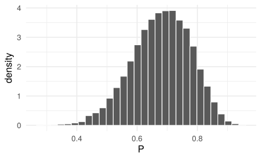
4.5 Dos monedas
Un problema con el algoritmo de Metropolis-Hastings (M-H) es que solo funciona para la estimación de un solo parámetro.
El muestreo de Gibbs está pensado en el caso de la estimación de muchos parámetros de forma bastante ordenada.
Supongamos que tenemos dos monedas y queremos ver la proporción de escudos generados entre las dos monedas:
Tenemos:
- Parámetros: \(\theta_{1}\) y \(\theta_{2}\).
- Datos: \(N_{1}\) tiradas de la moneda 1 y \(N_{2}\) tiradas de la moneda 2. (cada una tuvo \(z_{1}\) y \(z_{2}\) éxitos).
Verosimilitud: Bernoulli. \[\begin{equation*} y_{1}^{i}\sim \mathrm{Bernoulli}(\theta_{1}) \quad y_{2}^{i}\sim \mathrm{Bernoulli}(\theta_{2}) \end{equation*}\]
Previa: Beta independiente para cada \(\theta\). \[\begin{equation*} \theta_{1}\sim \mathrm{Beta}(a_{1},b_{1}) \quad \theta_{2}\sim \mathrm{Beta}(a_{2},b_{2}) \end{equation*}\]
La distribución posterior se puede escribir como
\[\begin{align*} f\left(\theta_{1}, \theta_{2} | D\right) &=f\left(D | \theta_{1}, \theta_{2}\right) \frac{f\left(\theta_{1}, \theta_{2}\right)}{f(D)} \\ &=\theta_{1}^{z_{1}}\left(1-\theta_{1}\right)^{N_{1}-z_{1}} \theta_{1}^{z_{2}}\left(1-\theta_{2}\right)^{N_{2}-z_{2}} \frac{f\left(\theta_{1}, \theta_{2}\right)}{f(D)} \\ &=\frac{\theta_{1}^{z_{1}}\left(1-\theta_{1}\right)^{N_{1}-z_{1}} \theta_{1}^{z_{2}}\left(1-\theta_{2}\right)^{N_{2}-z_{2}} \theta_{1}^{a_{1}-1}\left(1-\theta_{1}\right)^{b_{1}-1} \theta_{2}^{a_{2}-1}\left(1-\theta_{2}\right)^{b_{2}-1}}{f(D) B\left(a_{1}, b_{1}\right) B\left(a_{2}, b_{2}\right)} \\ &=\frac{\theta_{1}^{z_{1}+a_{1}-1}\left(1-\theta_{1}\right)^{N_{1}-z_{1}+b_{1}-1} \theta_{2}^{z_{2}+a_{2}-1}\left(1-\theta_{2}\right)^{N_{2}-z_{2}+b_{2}-1}}{f(D) B\left(a_{1}, b_{1}\right) B\left(a_{2}, b_{2}\right)} \end{align*}\] Entonces la distribución posterior de \(\left(\theta_{1}, \theta_{2}\right)\) son dos distribuciones independientes Betas: \(\operatorname{Beta}\left(z_{1}+a, N_{1}-z_{1}+b_{1}\right)\) y \(\operatorname{Beta}\left(z_{2}+a, N_{2}-z_{2}+b_{2}\right)\)
Tratemos de encontrar los parámetros para la distribución posterior usando un algoritmo de Metropolis-Hasting. Función tomada de Kruschke-Notes
metro_2coins <- function(
z1, n1, # z = successes, n = trials
z2, n2, # z = successes, n = trials
size = c(0.1, 0.1), # sds of jump distribution
start = c(0.5, 0.5), # value of thetas to start at
num_steps = 5e4, # number of steps to run the algorithm
prior1 = dbeta, # function describing prior
prior2 = dbeta, # function describing prior
args1 = list(), # additional args for prior1
args2 = list() # additional args for prior2
) {
theta1 <- rep(NA, num_steps) # trick to pre-alocate memory
theta2 <- rep(NA, num_steps) # trick to pre-alocate memory
proposed_theta1 <- rep(NA, num_steps) # trick to pre-alocate memory
proposed_theta2 <- rep(NA, num_steps) # trick to pre-alocate memory
move <- rep(NA, num_steps) # trick to pre-alocate memory
theta1[1] <- start[1]
theta2[1] <- start[2]
size1 <- size[1]
size2 <- size[2]
for (i in 1:(num_steps-1)) {
# head to new "island"
proposed_theta1[i + 1] <- rnorm(1, theta1[i], size1)
proposed_theta2[i + 1] <- rnorm(1, theta2[i], size2)
if (proposed_theta1[i + 1] <= 0 ||
proposed_theta1[i + 1] >= 1 ||
proposed_theta2[i + 1] <= 0 ||
proposed_theta2[i + 1] >= 1) {
proposed_posterior <- 0 # because prior is 0
} else {
current_prior <-
do.call(prior1, c(list(theta1[i]), args1)) *
do.call(prior2, c(list(theta2[i]), args2))
current_likelihood <-
dbinom(z1, n1, theta1[i]) *
dbinom(z2, n2, theta2[i])
current_posterior <- current_prior * current_likelihood
proposed_prior <-
do.call(prior1, c(list(proposed_theta1[i+1]), args1)) *
do.call(prior2, c(list(proposed_theta2[i+1]), args2))
proposed_likelihood <-
dbinom(z1, n1, proposed_theta1[i+1]) *
dbinom(z2, n2, proposed_theta2[i+1])
proposed_posterior <- proposed_prior * proposed_likelihood
}
prob_move <- proposed_posterior / current_posterior
# sometimes we "sail back"
if (runif(1) > prob_move) { # sail back
move[i + 1] <- FALSE
theta1[i + 1] <- theta1[i]
theta2[i + 1] <- theta2[i]
} else { # stay
move[i + 1] <- TRUE
theta1[i + 1] <- proposed_theta1[i + 1]
theta2[i + 1] <- proposed_theta2[i + 1]
}
}
tibble(
step = 1:num_steps,
theta1 = theta1,
theta2 = theta2,
proposed_theta1 = proposed_theta1,
proposed_theta2 = proposed_theta2,
move = move,
size1 = size1,
size2 = size2
)
}Metro_2coinsA <- metro_2coins(z1 = 6, n1 = 8, z2 = 2,
n2 = 7, size = c(0.02, 0.02), args1 = list(shape1 = 2,
shape2 = 2), args2 = list(shape1 = 2, shape2 = 2))
Metro_2coinsA %>% gf_density2d(theta2 ~ theta1)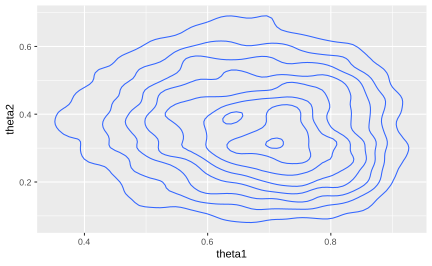
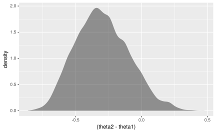
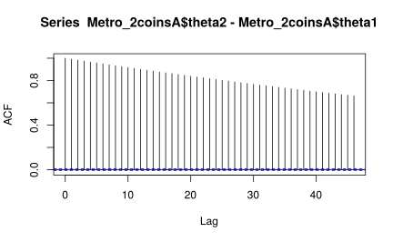
Metro_2coinsA %>% filter(step < 500) %>% gf_path(theta2 ~
theta1, color = ~step, alpha = 0.5, arrow = arrow(type = "open",
angle = 30, length = unit(0.1, "inches"))) + theme_minimal()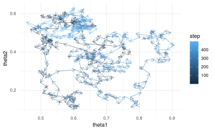
library(gganimate)
Metro_2coinsAplot <- Metro_2coinsA %>% filter(step <
500) %>% gf_path(theta2 ~ theta1, color = ~step,
alpha = 0.5, arrow = arrow(type = "open", angle = 30)) +
theme_minimal() + transition_reveal(step)
animate(Metro_2coinsAplot, fps = 1)Metro_2coinsB <- metro_2coins(z1 = 6, n1 = 8, z2 = 2,
n2 = 7, size = c(0.2, 0.2), args1 = list(shape1 = 2,
shape2 = 2), args2 = list(shape1 = 2, shape2 = 2))
Metro_2coinsB %>% gf_density2d(theta2 ~ theta1)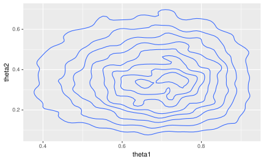
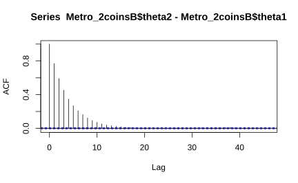
Metro_2coinsB %>% filter(step < 500) %>% gf_path(theta2 ~
theta1, color = ~step, alpha = 0.5, arrow = arrow(type = "open",
angle = 30, length = unit(0.1, "inches"))) + theme_minimal()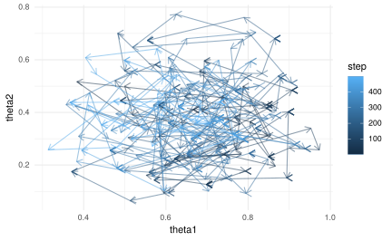
Metro_2coinsBplot <- Metro_2coinsA %>% filter(step <
500) %>% gf_path(theta2 ~ theta1, color = ~step,
alpha = 0.5, arrow = arrow(type = "open", angle = 30)) +
theme_minimal() + transition_reveal(step)
animate(Metro_2coinsBplot, fps = 1)4.5.1 Muestreo de Gibbs
Para este ejemplo \(\left( \theta_{1},\theta_{2} \right)\), entonces la forma de escoger la posteriores en cada paso sería de la forma:
- Tome al azar un \(\boldsymbol{\theta}^{0} = \left( \theta_{1}^{0},\theta_{2}^{0} \right)\).
- Escoja \(\theta_{1}^{1}\) a partir de la distribución \(f\left(\theta_{1} \vert \theta_{1}=\theta_{1}^{0}, \theta_{2}=\theta_{2}^{0}, \boldsymbol{X} \right)\).
- Escoja \(\theta_{2}^{1}\) a partir de la distribución \(f\left(\theta_{2} \vert \theta_{1}=\theta_{1}^{1}, \theta_{2}=\theta_{2}^{0}, \boldsymbol{X} \right)\).
Esto completa un ciclo del muestreo. Cada ciclo genera nuevos \(\boldsymbol{\theta}^{i} = \left( \theta_{1}^{i},\theta_{2}^{i} \right)\) hasta que el proceso converja.
Nota: En realidad el muestreo de Gibbs se basa en el algoritmo de M-H, con la diferencia que la elección de los parámetros se escogen teniendo en cuanta los datos y fijando los otros parámetros. Es decir,
\[\begin{align*} &{\left[\theta_{1} | \theta_{2}, \ldots, \theta_{M}, datos \right]} \\ &{\left[\theta_{2} | \theta_{1}, \theta_{3}, \ldots, \theta_{M}, datos \right]} \\ &{\left[\theta_{M} | \theta_{1}, \ldots, \theta_{M-1}, datos \right]} \end{align*}\]
El tratamiento teórico puede ser consultado https://www.ece.iastate.edu/~namrata/EE527_Spring08/l4c.pdf#page=16
\[\begin{align*} f\left(\theta_{1} | \theta_{2}, D\right) &= \frac{f\left(\theta_{1}, \theta_{2} | D\right)}{f\left(\theta_{2} | D\right)} \\ &= \frac{f\left(\theta_{1}, \theta_{2} | D\right)}{\int f\left(\theta_{1}, \theta_{2} | D\right)d \theta_{1}} \\ &=\frac{\operatorname{dbeta}\left(\theta_{1}, z_{1}+a_{1}, N_{1}-z_{1}+b_{1}\right) \cdot \operatorname{dbeta}\left(\theta_{2}, z_{2}+a_{2}, N_{2}-z_{2}+b_{2}\right)}{\int \operatorname{dbeta}\left(\theta_{1}, z_{1}+a_{1}, N_{1}-z_{1}+b_{1}\right) \cdot \operatorname{dbeta}\left(\theta_{2} | z_{2}+a_{2}, N_{2}-z_{2}+b_{2}\right)d \theta_{1}} \\ &=\frac{\operatorname{dbeta}\left(\theta_{1}, z_{1}+a_{1}, N_{1}-z_{1}+b_{1}\right) \cdot \operatorname{dbeta}\left(\theta_{2}, z_{2}+a_{2}, N_{2}-z_{2}+b_{2}\right)}{\operatorname{dbeta}\left(\theta_{2} | z_{2}+a_{2}, N_{2}-z_{2}+b_{2}\right) \int \operatorname{dbeta}\left(\theta_{1}, z_{1}+a_{1}, N_{1}-z_{1}+b_{1}\right)d \theta_{1}} \\ &=\frac{\operatorname{dbeta}\left(\theta_{1}, z_{1}+a_{1}, N_{1}-z_{1}+b_{1}\right)}{\int \operatorname{dbeta}\left(\theta_{1}, z_{1}+a_{1}, N_{1}-z_{1}+b_{1}\right)d \theta_{1}} \\ &=\operatorname{dbeta}\left(\theta_{1}, z_{1}+a_{1}, N_{1}-z_{1}+b_{1}\right) \end{align*}\]
gibbs_2coins <- function(
z1, n1, # z = successes, n = trials
z2, n2, # z = successes, n = trials
start = c(0.5, 0.5), # value of thetas to start at
num_steps = 1e4, # number of steps to run the algorithm
a1, b1, # params for prior for theta1
a2, b2 # params for prior for theta2
) {
theta1 <- rep(NA, num_steps) # trick to pre-alocate memory
theta2 <- rep(NA, num_steps) # trick to pre-alocate memory
theta1[1] <- start[1]
theta2[1] <- start[2]
for (i in 1:(num_steps-1)) {
if (i %% 2 == 1) { # update theta1
theta1[i+1] <- rbeta(1, z1 + a1, n1 - z1 + b1)
theta2[i+1] <- theta2[i]
} else { # update theta2
theta1[i+1] <- theta1[i]
theta2[i+1] <- rbeta(1, z2 + a2, n2 - z2 + b2)
}
}
tibble(
step = 1:num_steps,
theta1 = theta1,
theta2 = theta2,
)
}Gibbs <- gibbs_2coins(z1 = 6, n1 = 8, z2 = 2, n2 = 7,
a1 = 2, b1 = 2, a2 = 2, b2 = 2)
Gibbs %>% gf_density2d(theta2 ~ theta1)
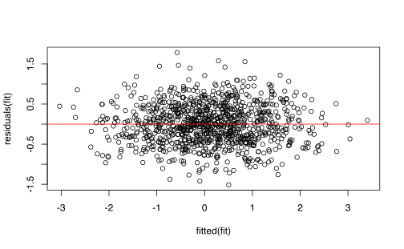
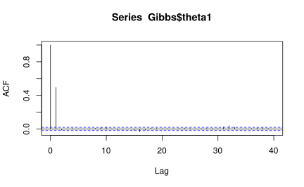
Gibbs %>% filter(step < 500) %>% gf_path(theta2 ~ theta1,
color = ~step, alpha = 0.5, arrow = arrow(type = "open",
angle = 30, length = unit(0.1, "inches"))) +
theme_minimal()
Gibbsplot <- Gibbs %>% filter(step < 500) %>% gf_path(theta2 ~
theta1, color = ~step, alpha = 0.5, arrow = arrow(type = "open",
angle = 30)) + theme_minimal() + transition_reveal(step)
animate(Gibbsplot, fps = 1)Ciclos completos

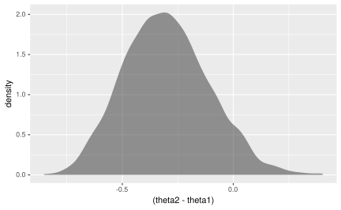
Gibbs %>% filter(step%%2 == 0) %>% mutate(difference = theta2 -
theta1) %>% pull(difference) %>% acf()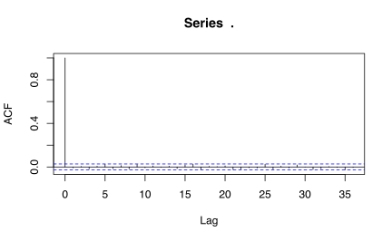
Gibbs %>% filter(step < 500, step%%2 == 0) %>% gf_path(theta2 ~
theta1, color = ~step, alpha = 0.5, arrow = arrow(type = "open",
angle = 30, length = unit(0.1, "inches"))) + theme_minimal()
4.6 Uso de JAGS
El paquete que usaremos en esta sección es R2jags y coda. Los cargamos con las instrucciones
## Rows: 50
## Columns: 1
## $ y <int> 0, 1, 0, 0, 0, 0, 0, 0, 0, 0, 1, 0, 0, 0, 1, 1, 1, 0, 0, 1, 0, 0, 0…## [1] 0.3## [1] 0.46291En el lenguaje usual de JAGS, el modelo debe escribirse de la forma:
model
{
for (i in 1:N) {
y[i] ~ dbern(theta)
}
theta ~ dbeta(1, 1)
}
donde dbern y dbeta son las densidades de una bernoulli y beta respectivamente. En este lenguage no existen versiones vectorizadas de las funciones por lo que todo debe llenarse usando for’s. Una revisión completa de este lenguage la pueden econtrar en su manual de uso1
El paquete R2jags tiene la capacidad que en lugar de usar este tipo de sintaxis, se pueda usar el lenguaje natural para escribir el modelo. Note el uso de function en este caso.
bern_jags <- jags(data = list(y = bernoulli$y, N = nrow(bernoulli)),
model.file = bern_model, parameters.to.save = c("theta"))## Compiling model graph
## Resolving undeclared variables
## Allocating nodes
## Graph information:
## Observed stochastic nodes: 50
## Unobserved stochastic nodes: 1
## Total graph size: 53
##
## Initializing modelVeamos el resultado
## Inference for Bugs model at "/tmp/RtmpEajct8/model3d8231f594.txt", fit using jags,
## 3 chains, each with 2000 iterations (first 1000 discarded)
## n.sims = 3000 iterations saved
## mu.vect sd.vect 2.5% 25% 50% 75% 97.5% Rhat n.eff
## theta 0.309 0.063 0.193 0.266 0.305 0.350 0.436 1.001 3000
## deviance 62.061 1.373 61.087 61.170 61.518 62.433 65.834 1.005 1400
##
## For each parameter, n.eff is a crude measure of effective sample size,
## and Rhat is the potential scale reduction factor (at convergence, Rhat=1).
##
## DIC info (using the rule, pD = var(deviance)/2)
## pD = 0.9 and DIC = 63.0
## DIC is an estimate of expected predictive error (lower deviance is better).## Error in verosimilitud(theta, data): argument "data" is missing, with no defaultgf_dhistogram(~theta, data = posterior(bern_jags),
bins = 50) %>% gf_dens(~theta, size = 1.5, alpha = 0.8) %>%
gf_dist("beta", shape1 = 16, shape2 = 36, color = "red")## Error in verosimilitud(theta, data): argument "data" is missing, with no default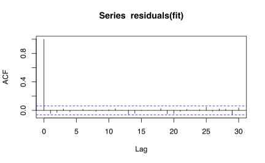

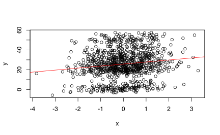
mcmc_trace(bern_mcmc, pars = "theta") %>% gf_facet_grid(Chain ~
.) %>% gf_refine(scale_color_viridis_d())## Error: At least one layer must contain all faceting variables: `Chain`.
## * Plot is missing `Chain`
## * Layer 1 is missing `Chain`
plot_post(bern_mcmc[, "theta"], main = "theta", xlab = expression(theta),
cenTend = "median", compVal = 0.5, ROPE = c(0.45,
0.55), credMass = 0.9, quietly = TRUE)
| y | s |
|---|---|
| 1 | Reginald |
| 0 | Reginald |
| 1 | Reginald |
| 1 | Reginald |
| 1 | Reginald |
| 1 | Reginald |
| 1 | Reginald |
| 0 | Reginald |
| 0 | Tony |
| 0 | Tony |
| 1 | Tony |
| 0 | Tony |
| 0 | Tony |
| 1 | Tony |
| 0 | Tony |
Target <- twobernoulli %>% rename(hit = y, subject = s)
Target %>% group_by(subject) %>% summarise(prop_0 = sum(1 -
hit)/n(), prop_1 = sum(hit)/n(), attemps = n())## # A tibble: 2 x 4
## subject prop_0 prop_1 attemps
## <chr> <dbl> <dbl> <int>
## 1 Reginald 0.25 0.75 8
## 2 Tony 0.714 0.286 7bern2_model <- function() {
for (i in 1:Nobs) {
# each response is Bernoulli with the appropriate
# theta
hit[i] ~ dbern(theta[subject[i]])
}
for (s in 1:Nsub) {
theta[s] ~ dbeta(2, 2) # prior for each theta
}
}TargetList <- list(Nobs = nrow(Target), Nsub = 2, hit = Target$hit,
subject = as.numeric(as.factor(Target$subject)))
TargetList## $Nobs
## [1] 15
##
## $Nsub
## [1] 2
##
## $hit
## [1] 1 0 1 1 1 1 1 0 0 0 1 0 0 1 0
##
## $subject
## [1] 1 1 1 1 1 1 1 1 2 2 2 2 2 2 2## Compiling model graph
## Resolving undeclared variables
## Allocating nodes
## Graph information:
## Observed stochastic nodes: 15
## Unobserved stochastic nodes: 2
## Total graph size: 35
##
## Initializing model
mcmc_combo(bern2_mcmc, combo = c("dens", "dens_overlay",
"trace", "scatter"), pars = c("theta[1]", "theta[2]"))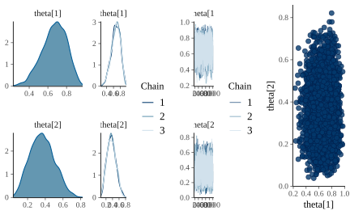
4.7 Uso de STAN
STAN2 es otro tipo de lenguaje para definir modelos bayesiano. El lenguaje es un poco más sencillo, pero es particularmente útil para modelos bastante complejos.
STAN no usa el muestreo de Gibbs, sino en el método de Monte-Carlo Hamiltoniano. En el artículo (Hoffman and Gelman 2014) se propone el método NUTS para mejorar el muestreo de Gibbs.
En este curso no nos referiremos a este procedimiento, pero si veremos un poco de la sintaxis del lenguaje STAN.
data {
int<lower=0> N; // number of trials
int<lower=0, upper=1> y[N]; // success on trial n
}
parameters {
real<lower=0, upper=1> theta; // chance of success
}
model {
theta ~ uniform(0, 1); // prior
y ~ bernoulli(theta); // likelihood
}library(rstan)
fit <- stan(model_code = bern_stan@model_code, data = list(y = bernoulli$y,
N = nrow(bernoulli)), iter = 5000)##
## SAMPLING FOR MODEL '4584de91ce47196187979d2da8a67926' NOW (CHAIN 1).
## Chain 1:
## Chain 1: Gradient evaluation took 8e-06 seconds
## Chain 1: 1000 transitions using 10 leapfrog steps per transition would take 0.08 seconds.
## Chain 1: Adjust your expectations accordingly!
## Chain 1:
## Chain 1:
## Chain 1: Iteration: 1 / 5000 [ 0%] (Warmup)
## Chain 1: Iteration: 500 / 5000 [ 10%] (Warmup)
## Chain 1: Iteration: 1000 / 5000 [ 20%] (Warmup)
## Chain 1: Iteration: 1500 / 5000 [ 30%] (Warmup)
## Chain 1: Iteration: 2000 / 5000 [ 40%] (Warmup)
## Chain 1: Iteration: 2500 / 5000 [ 50%] (Warmup)
## Chain 1: Iteration: 2501 / 5000 [ 50%] (Sampling)
## Chain 1: Iteration: 3000 / 5000 [ 60%] (Sampling)
## Chain 1: Iteration: 3500 / 5000 [ 70%] (Sampling)
## Chain 1: Iteration: 4000 / 5000 [ 80%] (Sampling)
## Chain 1: Iteration: 4500 / 5000 [ 90%] (Sampling)
## Chain 1: Iteration: 5000 / 5000 [100%] (Sampling)
## Chain 1:
## Chain 1: Elapsed Time: 0.030949 seconds (Warm-up)
## Chain 1: 0.029489 seconds (Sampling)
## Chain 1: 0.060438 seconds (Total)
## Chain 1:
##
## SAMPLING FOR MODEL '4584de91ce47196187979d2da8a67926' NOW (CHAIN 2).
## Chain 2:
## Chain 2: Gradient evaluation took 5e-06 seconds
## Chain 2: 1000 transitions using 10 leapfrog steps per transition would take 0.05 seconds.
## Chain 2: Adjust your expectations accordingly!
## Chain 2:
## Chain 2:
## Chain 2: Iteration: 1 / 5000 [ 0%] (Warmup)
## Chain 2: Iteration: 500 / 5000 [ 10%] (Warmup)
## Chain 2: Iteration: 1000 / 5000 [ 20%] (Warmup)
## Chain 2: Iteration: 1500 / 5000 [ 30%] (Warmup)
## Chain 2: Iteration: 2000 / 5000 [ 40%] (Warmup)
## Chain 2: Iteration: 2500 / 5000 [ 50%] (Warmup)
## Chain 2: Iteration: 2501 / 5000 [ 50%] (Sampling)
## Chain 2: Iteration: 3000 / 5000 [ 60%] (Sampling)
## Chain 2: Iteration: 3500 / 5000 [ 70%] (Sampling)
## Chain 2: Iteration: 4000 / 5000 [ 80%] (Sampling)
## Chain 2: Iteration: 4500 / 5000 [ 90%] (Sampling)
## Chain 2: Iteration: 5000 / 5000 [100%] (Sampling)
## Chain 2:
## Chain 2: Elapsed Time: 0.021397 seconds (Warm-up)
## Chain 2: 0.023807 seconds (Sampling)
## Chain 2: 0.045204 seconds (Total)
## Chain 2:
##
## SAMPLING FOR MODEL '4584de91ce47196187979d2da8a67926' NOW (CHAIN 3).
## Chain 3:
## Chain 3: Gradient evaluation took 7e-06 seconds
## Chain 3: 1000 transitions using 10 leapfrog steps per transition would take 0.07 seconds.
## Chain 3: Adjust your expectations accordingly!
## Chain 3:
## Chain 3:
## Chain 3: Iteration: 1 / 5000 [ 0%] (Warmup)
## Chain 3: Iteration: 500 / 5000 [ 10%] (Warmup)
## Chain 3: Iteration: 1000 / 5000 [ 20%] (Warmup)
## Chain 3: Iteration: 1500 / 5000 [ 30%] (Warmup)
## Chain 3: Iteration: 2000 / 5000 [ 40%] (Warmup)
## Chain 3: Iteration: 2500 / 5000 [ 50%] (Warmup)
## Chain 3: Iteration: 2501 / 5000 [ 50%] (Sampling)
## Chain 3: Iteration: 3000 / 5000 [ 60%] (Sampling)
## Chain 3: Iteration: 3500 / 5000 [ 70%] (Sampling)
## Chain 3: Iteration: 4000 / 5000 [ 80%] (Sampling)
## Chain 3: Iteration: 4500 / 5000 [ 90%] (Sampling)
## Chain 3: Iteration: 5000 / 5000 [100%] (Sampling)
## Chain 3:
## Chain 3: Elapsed Time: 0.022813 seconds (Warm-up)
## Chain 3: 0.014396 seconds (Sampling)
## Chain 3: 0.037209 seconds (Total)
## Chain 3:
##
## SAMPLING FOR MODEL '4584de91ce47196187979d2da8a67926' NOW (CHAIN 4).
## Chain 4:
## Chain 4: Gradient evaluation took 5e-06 seconds
## Chain 4: 1000 transitions using 10 leapfrog steps per transition would take 0.05 seconds.
## Chain 4: Adjust your expectations accordingly!
## Chain 4:
## Chain 4:
## Chain 4: Iteration: 1 / 5000 [ 0%] (Warmup)
## Chain 4: Iteration: 500 / 5000 [ 10%] (Warmup)
## Chain 4: Iteration: 1000 / 5000 [ 20%] (Warmup)
## Chain 4: Iteration: 1500 / 5000 [ 30%] (Warmup)
## Chain 4: Iteration: 2000 / 5000 [ 40%] (Warmup)
## Chain 4: Iteration: 2500 / 5000 [ 50%] (Warmup)
## Chain 4: Iteration: 2501 / 5000 [ 50%] (Sampling)
## Chain 4: Iteration: 3000 / 5000 [ 60%] (Sampling)
## Chain 4: Iteration: 3500 / 5000 [ 70%] (Sampling)
## Chain 4: Iteration: 4000 / 5000 [ 80%] (Sampling)
## Chain 4: Iteration: 4500 / 5000 [ 90%] (Sampling)
## Chain 4: Iteration: 5000 / 5000 [100%] (Sampling)
## Chain 4:
## Chain 4: Elapsed Time: 0.015504 seconds (Warm-up)
## Chain 4: 0.017556 seconds (Sampling)
## Chain 4: 0.03306 seconds (Total)
## Chain 4:## Inference for Stan model: 4584de91ce47196187979d2da8a67926.
## 4 chains, each with iter=5000; warmup=2500; thin=1;
## post-warmup draws per chain=2500, total post-warmup draws=10000.
##
## mean se_mean sd 10% 90% n_eff Rhat
## theta 0.31 0.00 0.06 0.23 0.39 3491 1
## lp__ -32.62 0.01 0.74 -33.50 -32.10 4677 1
##
## Samples were drawn using NUTS(diag_e) at Wed Jun 17 15:28:52 2020.
## For each parameter, n_eff is a crude measure of effective sample size,
## and Rhat is the potential scale reduction factor on split chains (at
## convergence, Rhat=1).## [1] 0.3065303## 10% 90%
## 0.2253078 0.3906447Ejercicio 4.1 Replique los resultados anteriores pero para el caso de 2 monedas y comente los resultados.
References
Albert, Jim, Robert Gentleman, Giovanni Parmigiani, and Kurt Hornik. 2009. Bayesian Computation with R. Bayesian Computation with R. New York, NY: Springer New York. https://doi.org/10.1007/978-0-387-92298-0.
Hoffman, Matthew D., and Andrew Gelman. 2014. “The No-U-Turn Sampler: Adaptively Setting Path Lengths in Hamiltonian Monte Carlo.” Journal of Machine Learning Research 15 (47): 1593–1623. http://arxiv.org/abs/1111.4246.
Kruschke, John K. 2014. “Doing Bayesian Data Analysis: A Tutorial with R, JAGS, and Stan, Second Edition.” In Doing Bayesian Data Analysis: A Tutorial with R, JAGS, and Stan, Second Edition, 1–759.